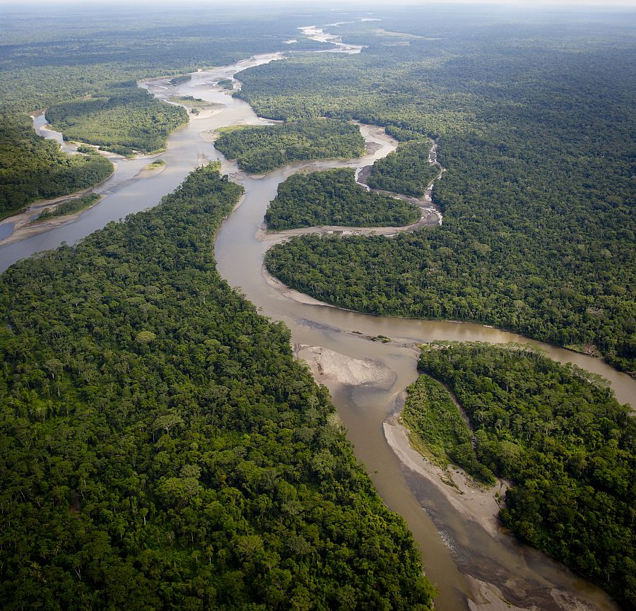

¡Colombia, potencia mundial de la biodiversidad!
El pulmón del planeta tierra
El Amazonas es una de las regiones más ricas en biodiversidad del mundo. Su multiculturalidad, tradiciones y creencias, son algunos de los aspectos que más llaman la atención para quienes decidimos visitar este destino y conocer de cerca lo que esconde el pulmón del mundo. Con esto podemos decir que, la mayor parte de la población que habita en el Amazonas está conformada por personas que aún conservan su cultura, su lengua y sus tradiciones, además, son quienes siguen viviendo en armonía como protectores de su entorno natural.